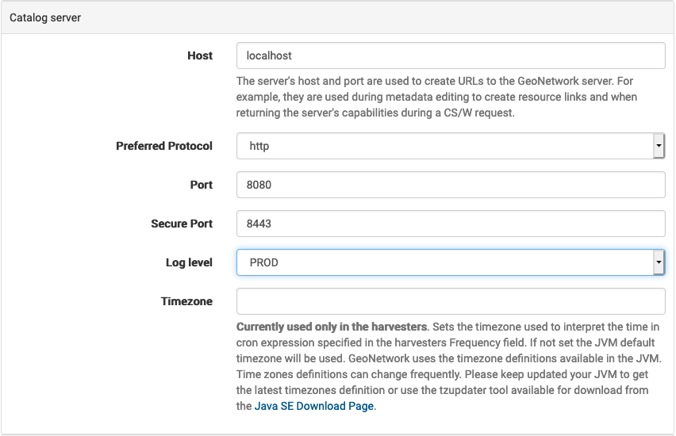
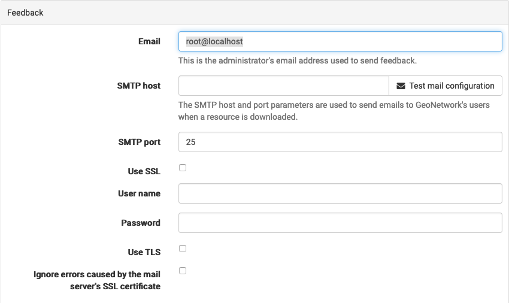
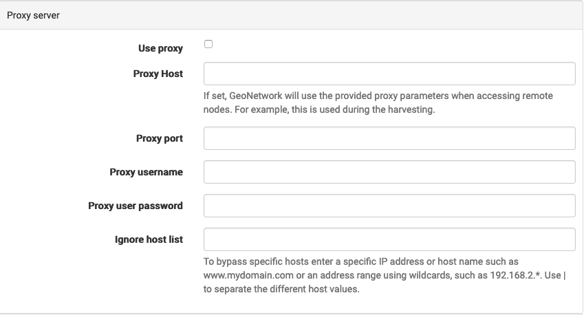

Settings
Settings: System
Common to review from the Settings page:
Catalog server:
Network details: Update to accurately identify this web service.
Log level: Change level of detail reported for troubleshooting, return to PROD for general use.
 Catalog server
Feedback: mail configuration
 Feedback settings.
Proxy server: optional proxy used to allow geonetwork to access external web services.
 Proxy service
A subset of settings for are required for validation and managed during application startup.
Site:
system/site/name
system/site/organization
Schema settings:
schema/iso19139.ca.HNAP/DefaultMainOrganizationName_en
schema/iso19139.ca.HNAP/UseGovernmentOfCanadaOrganisationName
schema/iso19139.ca.HNAP/DefaultMainOrganizationName_fr
system/metadata/validation/removeSchemaLocation
See initialization file
initialization/settings/settings.jsonfor details.
Settings: User Interface
Settings for UI Settings page;
HNAP adds a layers=<name> parameter to the GetCapabilities URL used to document a WMS Service
To support this functionality locate Add WMS layers from metadata to the map viewer heading, and change the URL parameter with the layer name to layers.

HNAP setting for URL parameter